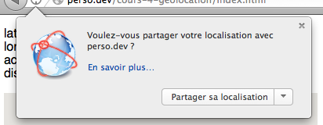

H2 - P2017
Développement web
Cours 4 - 2013-09-30
github : https://github.com/brunosimon/hetic
site : http://bruno-simon.com/hetic/p2017/
contact : bruno.simon@hetic.net - @bruno_simon
html5 / CSS3
Geoloca(lisa)tion
Positionnement géographique du device.
Utilise les données disponibles (IP, relais, gps, wifi, ...)
Renvoie la latitude, la longitude et la précision
LATITUDE / LONGITUDE
Permettent de se positionner sur la planète
Exprimés en degrés

Utilité
- Site d'hôtellerie
- Site de transports
- Chasse au trésor
- Offre fidélité
- Bons plans dans le coin
- Trouver ses amis
- ...
Autorisation
Impossible de récupérer les données de localisation tant que l'utilisateur ne l'a pas autorisé


getCurrentPosition()
Renvoie la position une fois
Exemple
Basique
if(navigator.geolocation)
{
navigator.geolocation.getCurrentPosition(
function(position)
{
console.log(position);
},
function(error)
{
console.log(error.message);
}
);
}
else
{
alert('Geolocation is not supported');
}
Exemple
Avec interval
var start = null;
var distance = null;
window.setInterval(function()
{
navigator.geolocation.getCurrentPosition(
function(position)
{
if(start === null)
start = position.coords;
distance = get_distance(
start.latitude,
start.longitude,
position.coords.latitude,
position.coords.longitude
);
}
);
},1000);
Exemple
Avec interval (fonction de calcul de distance)
function get_distance(lat_1,lon_1,lat_2,lon_2)
{
var radius = 6378.137,
d_lat = (lat_2 - lat_1) * Math.PI / 180,
d_lon = (lon_2 - lon_1) * Math.PI / 180,
a = Math.sin(d_lat/2) * Math.sin(d_lat/2) +
Math.cos(lat_1 * Math.PI / 180) * Math.cos(lat_2 * Math.PI / 180) *
Math.sin(d_lon/2) * Math.sin(d_lon/2),
c = 2 * Math.atan2(Math.sqrt(a),Math.sqrt(1-a)),
d = radius * c;
return d * 1000; //Meters
}
watchPosition()
Renvoie la position à chaque fois que celle-ci change
Utilise le GPS si disponible
Forte utilisation de la batterie
Exemple
Basique
navigator.geolocation.watchPosition(
function(position)
{
console.log(position);
},
function(error)
{
console.log(error.message);
}
);
Exemple
Stopper le watch
var watch = navigator.geolocation.watchPosition(
function(position)
{
console.log(position);
}
);
navigator.geolocation.clearWatch(watch);
Compatibilité
http://goo.gl/48B6lZ : Can I Use
Aller plus loin
http://diveintohtml5.info/geolocation.html - Très complet